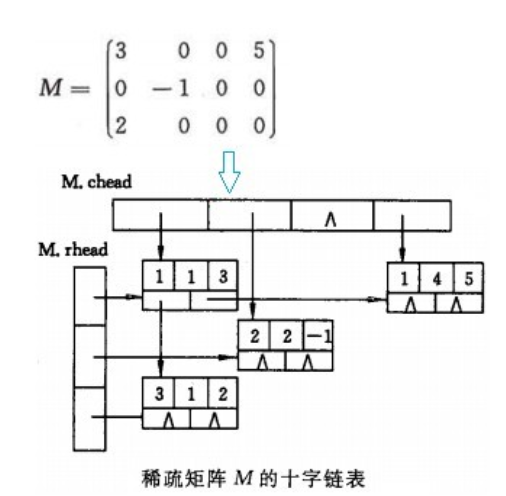
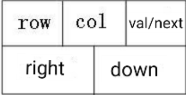

原文出处:本文由博客园博主丿不落良辰提供。
原文连接:https://www.cnblogs.com/Remilia-Scarlet/p/10700568.html
原文连接:https://www.cnblogs.com/Remilia-Scarlet/p/10700568.html
第四章讲的是串，数组和广义表，在做题过程中，逐渐发现STL中string的强大（下一个目标，熟悉string的函数）。
天梯赛L1-8 估值一亿的AI核心代码
这题也终于打出来了，心得是要尽量划分层次，思路要清晰，严谨，多写几个判断函数是完全没问题的（努力习惯中...）
AC代码：（原题）


#include <iostream> #include <string.h> using namespace std; char map[1005]; char a[1005],b[1005],c[1005]; int alen=0,blen=0,clen=0; bool vis[1005]; bool isbiao(char a) { if(a>='a'&&a<='z'||a>='A'&&a<='Z'||a>='0'&&a<='9'||a==' ') return false ; else return true; } bool isspace(char a) { return a==' '; } bool isalone(char a) { return isbiao(a)||isspace(a)||a=='\0'; } bool iscan(char a[]) { return !strcmp(a,"can you"); } bool iscould(char a[]) { return !strcmp(a,"could you"); } void solve_kong_big_wen() { alen=0; int len=strlen(map),i=0; if(map[i]==' '){//处理前空格 while(map[i]==' '){ ++i; } } for(;i<len;++i){ if(map[i]==' '){ if(i+1<len && !isspace(map[i+1]) && !isbiao(map[i+1])) a[alen++]=map[i]; } else if(map[i]=='?') a[alen++]='!'; else if(map[i]>='A'&&map[i]<='Z'&&map[i]!='I') a[alen++]=char(map[i]+32); else a[alen++]=map[i]; } a[alen]='\0'; } void solve_can() { memset(vis,0,sizeof(vis)); blen=0; for(int i=0;i<alen;++i){ if(a[i]=='c'){ int flag=0; if(i+6<alen) { if(!((i-1>=0&&isalone(a[i-1])||i-1==-1)&&(i+7<=alen&&isalone(a[i+7])))) ; else { char m[10]; strncpy(m,a+i,7); m[7]='\0'; if(iscan(m)) { vis[blen]=1;b[blen++]='I';b[blen++]=' ';b[blen++]='c';b[blen++]='a';b[blen++]='n';i+=6; continue; } } } if(i+8<alen){ if(!((i-1>=0&&isalone(a[i-1])||i-1==-1)&&(i+9<=alen&&isalone(a[i+9])))) { b[blen++]=a[i];continue; } char m[15]; strncpy(m,a+i,9); m[9]='\0'; if(iscould(m)) { vis[blen]=1;b[blen++]='I';b[blen++]=' ';b[blen++]='c';b[blen++]='o';b[blen++]='u';b[blen++]='l';b[blen++]='d';i+=8; } else b[blen++]=a[i]; } else b[blen++]=a[i]; } else b[blen++]=a[i]; } b[blen]='\0'; } void solve_I() { clen=0; for(int i=0;i<blen;++i){ if(b[i]=='I'&&!vis[i]){ if(!((i-1>=0&&isalone(b[i-1])||i-1==-1)&&(i+1<=blen&&isalone(b[i+1])))) c[clen++]=b[i]; else { c[clen++]='y';c[clen++]='o';c[clen++]='u'; } } else if(b[i]=='m'&&i+1<blen&&b[i+1]=='e'){ if(!((i-1>=0&&isalone(b[i-1])||i-1==-1)&&(i+2<=blen&&isalone(b[i+2])))) c[clen++]=b[i]; else { c[clen++]='y';c[clen++]='o';c[clen++]='u';i++; } } else c[clen++]=b[i]; } c[clen]='\0'; } int main() { int N; cin>>N; getchar(); while(N--){ cin.getline(map,1004); solve_kong_big_wen(); solve_can(); solve_I(); cout<<map<<endl; cout<<"AI: "<<c<<endl; } return 0; }
我想讨论的题目是 7-1 稀疏矩阵
这题没有删除增加，只有查询，感觉上开一个结构体数组存数据 + 一个for循环遍历就能解决了，但我还是去试着琢磨一下十字链表

（图片来源网络）
上图就是稀疏矩阵的样子，它有每一行的头指针，每一列的头指针，以及n个节点；
节点的图：

（图片来源网络）
一个节点代表矩阵中一个非零数字的信息
包括行（row），列（col），数值（value），指向右边的指针（right），指向下面的指针（down）
下面分享我开创一个十字链表的步骤：
一：定义（节点+链表）
int n,m,t;//待输入的信息，第二步用
定义节点：
typedef struct node{
int x,y,w; //x代表行，y代表列，w代表数值
node *down,*right;
}node;
定义链表：
struct crosslist{
node *rhead[505],*chead[505];//每一行指针，每一列指针
int hang,lie,num;//突出我英语不好
}M;
二：输入稀疏矩阵的行数、列数和矩阵中非零元素的个数并初始化指针
cin>>n>>m>>t;
for(int i=1;i<=n+5;++i){ //习惯多开一点空间
M.rhead[i]=NULL;
}
for(int i=1;i<=m+5;++i){
M.chead[i]=NULL;
}
三：输入每一个点的信息
for(int k=1;k<=t;++k){
//输入行，列，数值
cin>>i>>j>>w;
//开一个节点，并赋值
p=new node;
p->x =i;
p->y =j;
p->w =w;
//对该行处理，判断该行有没有元素，或者该行的第一个元素在准备插入的元素的右边，则直接插入
if(M.rhead[i]==NULL || M.rhead[i]->y>j ){
p->right =M.rhead[i];
M.rhead[i]=p;
}
//否则，找到应该插入的位置并插入
else {
for(q=M.rhead[i];q->right!=NULL&&q->right->y < j;q=q->right);//注意这个分号，for循环只是为了移动指针到合适的位置，没有对元素进行处理
p->right=q->right;
q->right=p;
}
//对该列处理，与行道理相同
if(M.chead[j]==NULL || M.chead[j]->x >i ){
p->down=M.chead[j];
M.chead[j]=p;
}
else {
for(q=M.chead[j];q->down!=NULL&&q->down->x<i ;q=q->down );
p->down=q->down;
q->down=p;
}
}
}
这样，十字链表就建好了，再写一个查询函数就可以了解决问题了（简单问题复杂化）
注意：这份代码仅仅是为了做题，针对性很强，漏洞很多。写出来主要是为了分享思想。
附上AC代码：
#include <iostream> #include <string.h> #include <algorithm> #include <stack> #include <stdio.h> #include <cmath> using namespace std; #define maxn 1000010 int n,m,t; typedef struct node{ int x,y,w; node *down,*right; }node; struct crosslist{ node *rhead[505],*chead[505];//行，列 int hang,lie,num; }M; void create() { node *p,*q; cin>>n>>m>>t; M.hang=n; M.lie=m; M.num=t; for(int i=1;i<=n+5;++i){ M.rhead[i]=NULL; } for(int i=1;i<=m+5;++i){ M.chead[i]=NULL; } int i,j,w; for(int k=1;k<=t;++k){ cin>>i>>j>>w; p=new node; p->x =i; p->y =j; p->w =w; if(M.rhead[i]==NULL || M.rhead[i]->y>j ){ p->right =M.rhead[i]; M.rhead[i]=p; } else { for(q=M.rhead[i];q->right!=NULL&&q->right->y < j;q=q->right); p->right=q->right; q->right=p; } if(M.chead[j]==NULL || M.chead[j]->x >i ){ p->down=M.chead[j]; M.chead[j]=p; } else { for(q=M.chead[j];q->down!=NULL&&q->down->x<i ;q=q->down ); p->down=q->down; q->down=p; } } } void query(int k) { int flag=0,i=0; while(flag==0&&i<=n) { ++i; node *p; p=M.rhead[i]; while(p!=NULL) { if(p->w==k){ flag=1; cout<<p->x<<" "<<p->y; break; } else p=p->right; } } if(flag==1) ; else cout<<"ERROR"; } int main() { create(); int n; cin>>n; query(n); return 0; }
上次博客定下的目标没有完成（做完线段树专题），原因是讲课好快啊都来不及做+思想理解了但代码敲不出来
接下来目标是熟悉string的函数，敲出主席树。